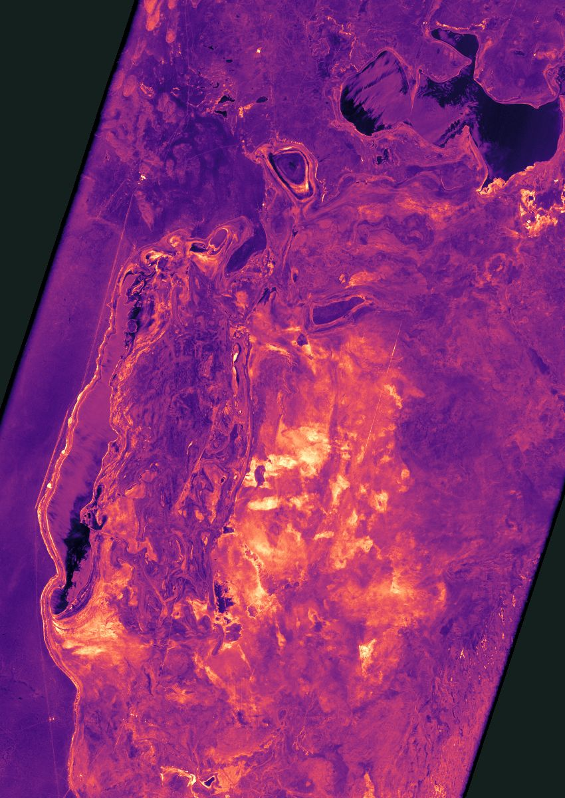
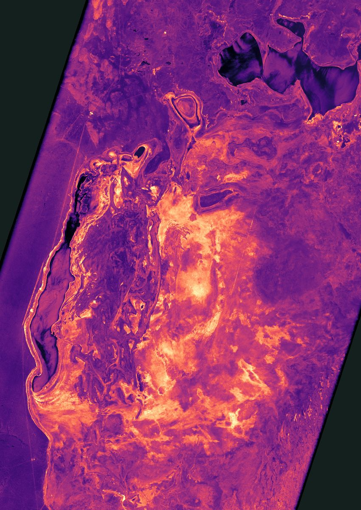
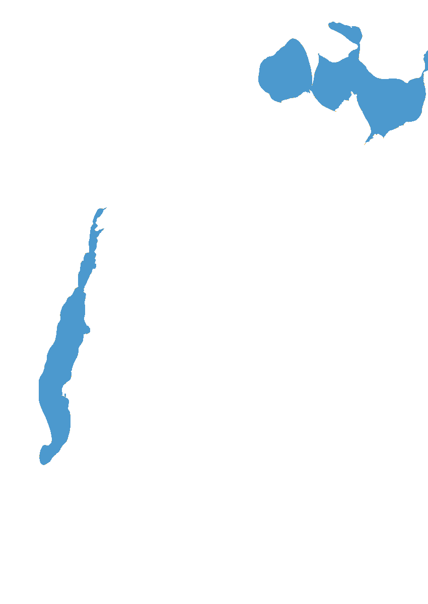
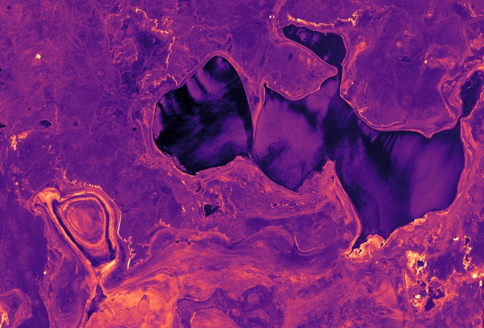

NASA Space Apps 2026 · Dancing with the SARs
A sea that split in two, and the half that is coming back
Follow the Aral Sea from the 1960s to NISAR's first radar passes in 2026. The history explains why it shrank. The radar shows what the water looks like now, and how sure we can be.
4thlargest lake on Earth before the rivers were divertedNASA Earth Observatory
10%of its original size remained by 2007, in four separate lakesAral Sea overview
34 km³North Aral volume target for restoration phase two (a plan, not yet reached)Trend, 21 Jan 2026
Chapter 01 · HistoryHow did this happen?Twelve dated moments, from river diversion to NISAR.
Chapter 02 · Present environmentWhat does it look like now?Water and uncertainty in the latest analysed radar pass.
Chapter 03 · Northern replenishmentWhere is water appearing or disappearing?Measured water maps beside what officials report.
Chapter 01 · History
How did this happen?
In the 1950s and 60s, the rivers that fed the Aral were diverted to irrigate cotton. Pick a moment to see what happened next. Images are for storytelling; the areas in this chapter are not our measurements, except the final entry.
From history to measurement
Look through the clouds with NISAR
NISAR's L-band radar images the same ground every 12 days, day or night, through cloud. Switch between two views of the same passes: brightness shows how rough the surface is, and coherence shows what stayed the same between passes. Water never stays the same, so it turns black. Fade or swipe to compare.


North Aral South Aral, west basin
Chapter 02 · Present environment
What does the area look like in the latest analysed observation?
Latest analysed observation: the 12 days from 7 to 19 October 2026. Blue is ground that lost all coherence over those 12 days and connects to the lake: open water. Amber is the shoreline that would change class if the coherence threshold moved by ±0.02.

Exposed ground and steppeStayed coherent. Dry seabed is not yet separated from steppe.Not split
Wetlands and deltaNeeds HV and optical checksNot mapped yet
2,939 km²
North Aral open water (2,930–2,944)
1,739 km²
South Aral west basin (1,736–1,741)
How this compares. Kazakhstan reports the North Aral at about 3,065 km². Our radar figure is about 4% lower. Shoreline definitions, the date and our 60 m pixels can all explain a gap of that size. The radar result has not yet been checked against optical imagery.
Chapter 03 · Northern replenishment
Where is water appearing, remaining or disappearing?
Nine 12-day windows from June to October 2026. Each window shows where water was present throughout. Pick one, or compare the first and the last.


Water lost Water gained Water in both
2,938 km²North: water in both windows
133 km²North: lost by October
0.5 km²North: gained by October
Water area by 12-day window
Bars show the range when the coherence threshold moves ±0.02. All 18 windows passed the quality check.
What has been done, reported, planned and measured
Management reports give context. They are not NISAR measurements, and a cumulative release figure is not a daily flow record.
How strong is the evidence?
What you can trust, and what still needs checking
The historical collapse
Decades of satellite images and field studies agree. We show published material and do not recalculate it.
Where the water is now
Coherence separates water from land on every window, with a narrow uncertainty band, and lands within about 4% of the official North Aral area. An optical cross-check is still to come.
Change within 2026
The shrinkage along shallow margins is larger than the uncertainty band. Four months cannot separate seasonal evaporation from management, and area alone says little about water level in steep basins.
First attempt
Radar brightness (GCOV HH)
2 of 6basin-dates passed the quality check. Wind roughens water until it is as bright as land.
Method used
Interferometric coherence (GUNW)
18 of 18basin-windows passed. Water decorrelates over 12 days whatever the wind; water and land coherence medians were about 0.10 and 0.33–0.64.
Method
- Downloaded 18 NISAR L2 GCOV and 18 L2 GUNW files (provisional P05023), track 107 descending, from NASA Earthdata.
- Backscatter: averaged HH and HV power in 3×3 blocks to 60 m, stitched frames 065–067 and converted to decibels.
- Coherence: read the 80 m coherence of frames 065 and 066 for each 12-day pair and resampled it to the same 60 m grid.
- For each pair and basin, chose the threshold that best separates a known water area from known land areas, and required at least 90% balanced accuracy.
- Kept low-coherence areas connected to each lake and filled enclosed gaps under 50 km².
- Reported area at the chosen threshold and at ±0.02, then compared the first and last windows pixel by pixel.
Next
- Validate against Sentinel-2 or Landsat on nearby cloud-free dates.
- Combine area with satellite lake-level data to estimate volume.
- Map the Syr Darya delta wetlands with the HV channel.
Code: tools/gcov_to_db.py → tools/coherence_water.py → tools/make_web_images.py.
Measurements
Every area on this page, with its quality check.
Data files
- water_boundaries.json: water outlines (GeoJSON) for every 12-day window and basin (WGS84; opens in QGIS)
- coherence_water_area.csv: areas, thresholds and quality checks
- change_summary.json: water lost, gained and persistent, June vs October
References
- The Aral Sea, Before the Streams Ran Dry, NASA Earth Observatory.
- Shrinking Aral Sea, NASA Scientific Visualization Studio.
- North Aral Sea Recovery, NASA Earth Observatory.
- The Aral Sea Loses Its Eastern Lobe, NASA Earth Observatory.
- Aladin, The Aral Sea: Already Dead, Dying, or Alive?, Aral 2009 abstracts.
- North Aral volume target of 34 km³, Trend, 21 Jan 2026.
- Phase two aims: 23 to 34 km³, about 3,065 to 3,913 km², Times of Central Asia.
- 1.4 km³ directed since 1 Oct 2025, Astana Times, July 2026.
- North Aral volume 23.40 km³ as of 10 Aug 2026, Trend.
- MODIS views of the Aral, 2000 and 2014, NASA Earth Observatory.